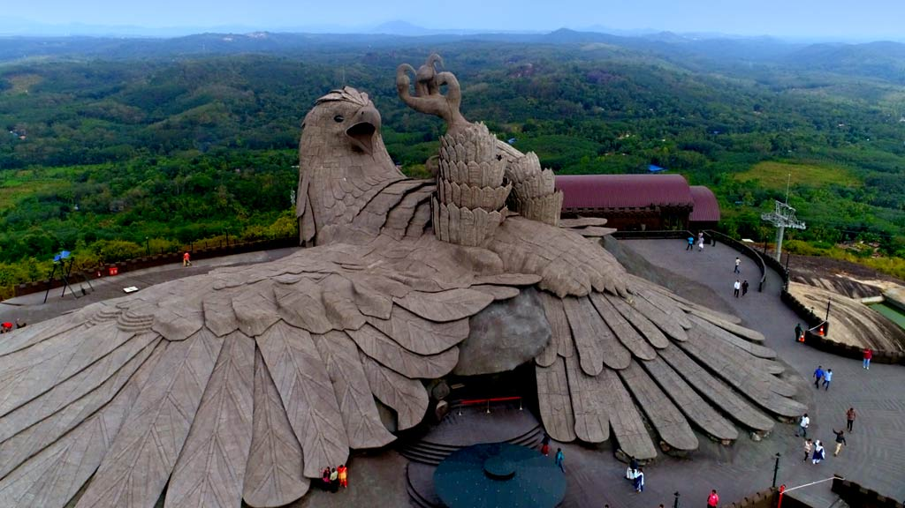

Jatayu Adventure Center
The world’s largest bird sculpture and within it a rock theme park for adventure enthusiasts is what today pays tribute to the mythical bird from the Indian epic Ramayana – Jatayu.The Jatayu Adventure Center (Jatayu Earth's Center), at Chadayamangalam, 50 km from Thiruvananthapuram, is a unique combination of artistry, mythology, technology, culture, adventure, leisure, and wellness. The virtual reality museum and the theatrical magic that renders the story of Jatayu add to the magic of the destination.A creation of Mr. Rajiv Anchal, this destination is sure to leave each visitor awestruck. The state of the art ropeway offers one a bird’s eye view of God’s Own Country just as the helicopter rides do as well.The Jatayu Adventure Center offers the largest adventure park within a natural terrain. Paintball, valley crossing, bouldering, zip line, trekking, archery, rappelling, jumaring and wall climbing are among the myriad activities available here. The climbing activities are designed around the natural rock formations on the hillside. While you are relishing the adrenaline rush the park offers you make sure you explore the multi cuisines at the food court with a panoramic view and the age-old Siddha Cave Healing Center as well for a complete, wholesome experience.
Ashtamudi Backwaters

A lake that resembles much to the shape of palm conifer or an octopus, Ashtamudi Lake is a much coveted tourist attraction in Kerala. Flaunting its enchanting beauty in Kollam, this awe-inspiring lake is a cult among all the backwater destinations in God’s Own Country. It is in fact, the highest visited or sought after backwater destination in the entire of Kerala. A revered tourist destination in the state, Ashtamudi Lake is known for its unique ecosystem and varied offerings. Shrouded with evergreen coconut groves and other scenic floral species, this alluring lake is a natural home to more than 50 different avifauna species and around 97 aqua fauna species. Visiting this magical lake in Kollam is no less than an exuberant visual treat for the visitors. Adding more to the beauty and charm of this Ashtamudi Lake is the cluster of tiny islets. The lake has a total of eight picturesque islands, most of which are still untouched by the outer world. The lake is also a great host to backwater cruises. Traditional houseboats or ‘Kettuvallams’ across this lake gets the visitors acquainted with the magical beauty and magnificence of Kerala’s silent backwaters. Within these exciting tours, visitors not only get to embrace the irresistible charm of the backwaters, but also get to witness a livelier glimpse of Kerala’s traditional way of living.
Shendurney Wildlife Sanctuary in Kollam
Shendurney Wildlife Sanctuary in Kollam is a beautiful natural haven located in Southern Kerala. It was established in 1984 and covers a total area of 171 sq. km. It is the only wildlife sanctuary in the district and is renowned for its biodiversity and beauty.The sanctuary is full of many picturesque vantage points. It has a host of trekking trails that takes one on a wonderful journey through these evergreen forests. Irrigation in Kollam and Pathanamthitta districts is taken care of by the Parappar Dam that was built across the Shendurney River. One comes across a rare tree species called Chenkurunji (Glutatravancorica) while travelling the forest. A safari here introduces one to hosts of wild herds including deer, monkey and bison. It is a gorgeous place to just relax and enjoy a nice picnic.
Thenmala Ecotourism

Thenmala, which lies at the conjunction of the Kollam-Shencottah road and the Trivandrum-Shencottah Road, boasts of India's first planned Ecotourism destination. It has 10 Ecotourism spots that cover the great hill ranges of Thiruvananthapuram, Pathanamthitta and Kollam districts. ‘Thenmala’ translates to 'Honey Hill' and so it is no surprise that high quality honey is exported from this area. The surrounding dense forest is also known for the timber that is in much demand across the country. Its terrain is dotted by forests, rubber and tree plantations and was selected by the World Tourism Organisation as one of the premier eco-friendly projects in the world.The Nakshatravanam, a nursery of trees that are considered sacred to the 27 constellations, has people thronging to it to take home a sapling of the tree related to their own birth star. A visit to the nearby Deer Rehabilitation Centre is a must as various species of deer are bred here. They are released into the forest when the population reaches optimum levels. A boat ride in the majestic Shendurney Wildlife Sanctuary caps off a memorable trip to Thenmala. The rare flora and fauna on display are truly exquisite and will remain etched in your memory forever.
Palaruvi Waterfalls
Palaruvi Falls, cascading downstream from the height of 300 ft, is one of the prime attractions in Kutrallam or as some call it Courtallam, Tamil Nadu. Owing to its height; it is the 32nd highest fall in our country. The name Palaruvi means 'Stream of Milk' in the regional language. Ironically it seems to be a glittering stream of milk as it flows down. Hence, the beauty of this fall stands unimaginable till witnessed with own eyes. The roaring sounds of the fall stand in stark contrast to the silence of the forests and mist-kissed mountains around it.